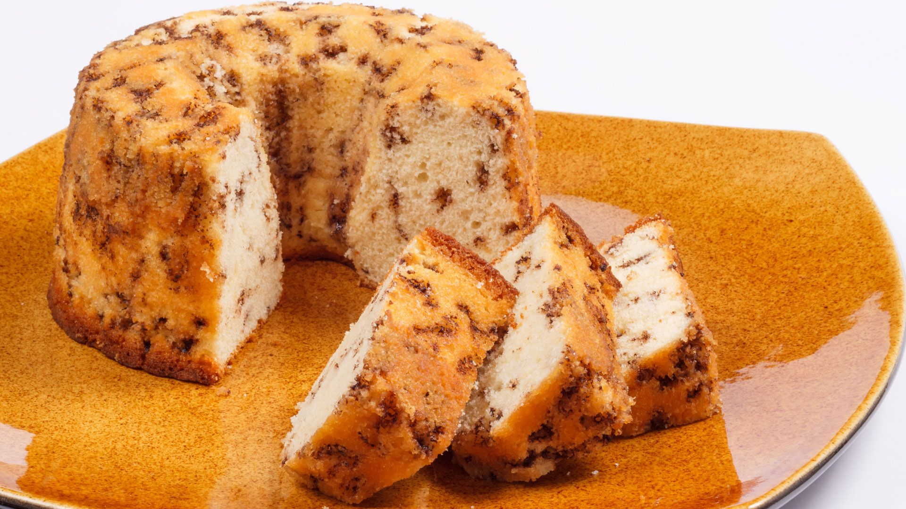

Bolo de Formiga

Description
This is a easy to make recipe that anyone can do at home
Ingredients
- 3 ovos
- 1 1/2 xicara de acucar
- 3 colheres (sopa) de margarina
- 3 xicaras (cha) de farinha de trigo
- 1 xicara (cha) de leite
- 1 xicara (cha) de chocolate granulado
- 1 colher (sopa) de farinha de trigo
- 1 colher (sopa) fermento em po
Steps
- Na batedeira, coloque os ovos, o açúcar e bata até formar um creme esbranquiçado.
- Em seguida adicione a margarina e bata mais um pouco, até incorporar.
- Adicione a farinha de trigo, o leite e bata por mais 2 minutinhos ou até misturar bem. Reserve.
- Numa tigela, misture o chocolate granulado com 1 colher de sopa de farinha de trigo.
- OBS: Isso faz com que o granulado não fique no fundo da forma.
- Despeje na massa do bolo e adicione o fermento em pó.
- Misture delicadamente até que fique bem agregado.
- Despeje essa mistura numa forma untada e enfarinhada.
- Leve para assar em forno pré-aquecido à 180ºC por cerca de 45 minutos.